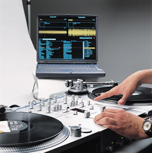

Final Scratch
woensdag 19 maart 2003 | Zomaar
Het Amerikaanse bedrijf Stanton verzoent de digitale muziekwereld met de traditionale vinylplaten. Hun pakket Final Scratch kan digitale nummers op alle bekende dj-manieren mishandelen via twee ordinaire Technics-platenspelers: scratchen, achterwaarts draaien, spinnen, … Enkele jaren geleden was ikzelf bedreven in het aaneen rijgen van het betere klop-en-smijtwerk, maar moest daarvoor elke week ongeveer 3000fr. aan platen uitgeven. Nu zit ik hier met mijn 20Gig mp3’s en geen DJ-carrière. Ik ben te vroeg geboren.
PS: Amon Tobin en DJ Shadow waren zo onder de indruk van Final Scratch dat ze besloten het direct live te gebruiken! Met andere woorden: ‘t is genen brol.
